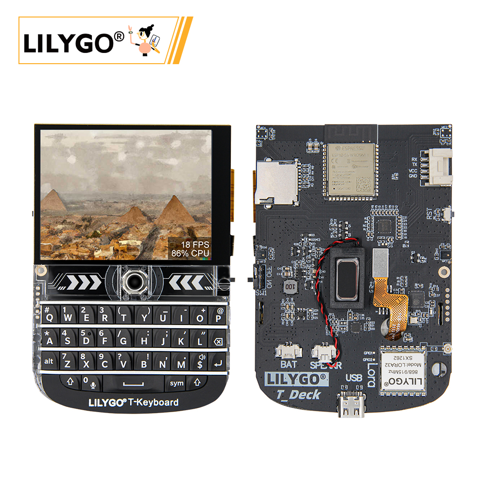
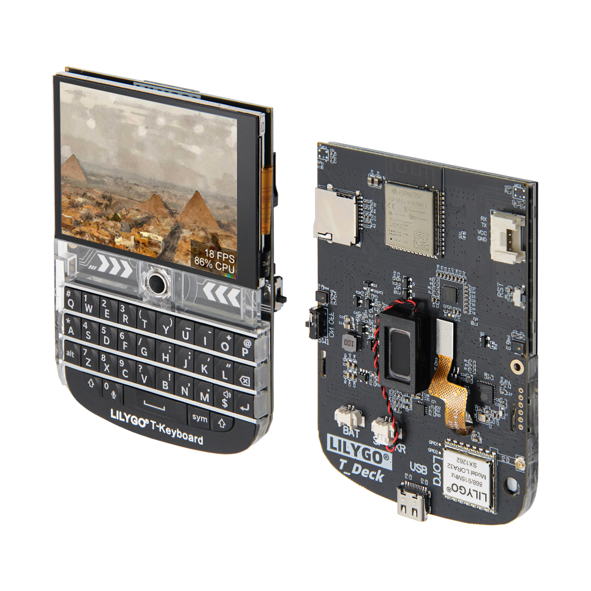
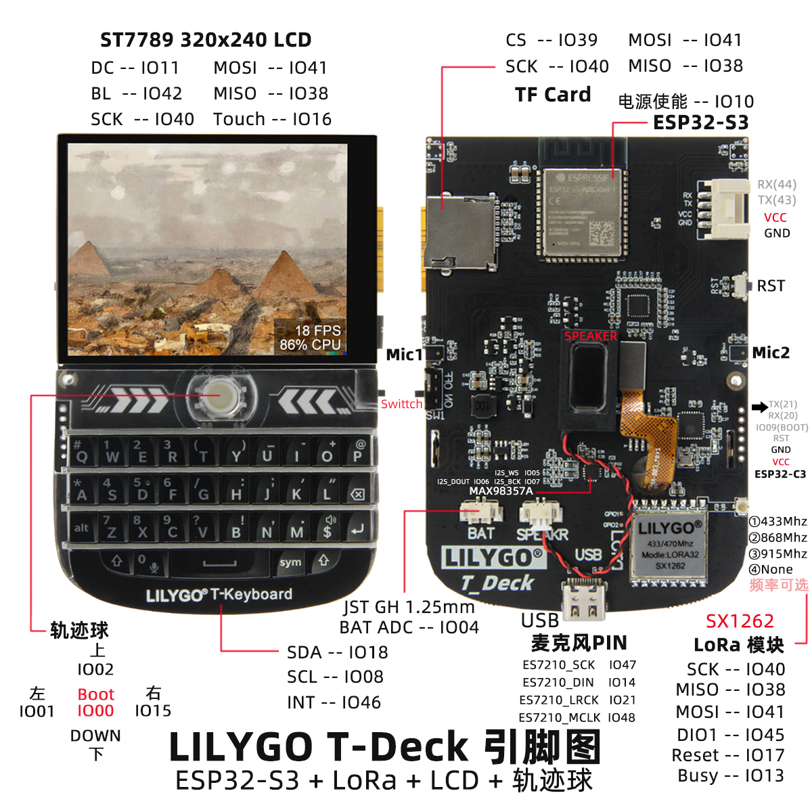
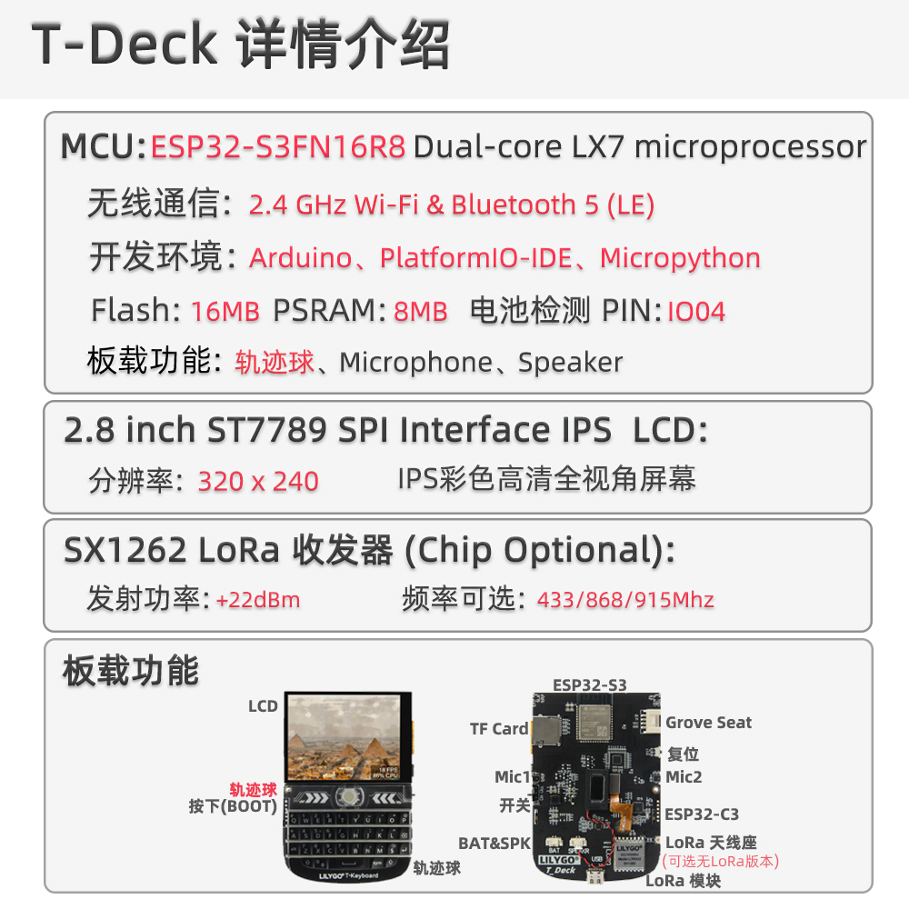

中文 简体
中文 简体LILYGO T-Deck

版本迭代:
| Version | Update date | Update description |
|---|---|---|
- T-Deck-Plus 已经将 Grove 接口上的Pin分配为GPS模块使用，所以T-Deck-Plus的 Grove 接口无法使用
- T-Deck 于 20240726 日更新 TFT_eSPI ST7789 初始化序列, 目前变更没有推送TFT_eSPI上游分支,使用时候如果发现屏幕显示不正确，请检查此处是否和仓库内的初始化序列一致
购买链接
| Product | SOC | FLASH | PSRAM | Link |
|---|---|---|---|---|
| T-Deck | ESP32-S3FN16R8 | 16MB | 8MB | LILYGO Mall |
目录
描述
LILYGO T-Deck 是一款高度集成的多功能嵌入式开发平台，基于 ESP32-S3 主控芯片设计，融合了 2.8 英寸 320x240 分辨率 ST7789 显示屏、轨迹球导航模块（含方向键与 BOOT 按键）、物理键盘接口（通过 I²C 通信）、TF 卡存储扩展、LoRa 无线通信模块（支持 SCK/MISO/MOSI 及控制引脚），以及 ES7210 麦克风阵列（用于音频输入）。其引脚布局兼顾了显示驱动（DC/BL/SPI）、触摸控制、传感器交互（SDA/SCL/INT）、电源管理（BAT ADC）及模块化扩展（SPI/I²C/UART），可快速实现物联网终端、便携式交互设备或低功耗无线通信项目的开发。
预览
实物图

引脚图

模块
MCU
- 芯片：ESP32-S3FN16R8 Dual-core LX7 microprocessor
- PSRAM：8MB
- FLASH：16MB
- 无线：Wi-Fi 802.11 b/g/n; Bluetooth 5.0 (LE)
- 其他说明：更多资料请访问乐鑫官方ESP32-S3数据手册
通信模块
- LoRa：SX1262芯片，支持433MHz~915MHz频段（可选）
- GPS：MIA-M10Q GNSS模块
- 无线：2.4GHz Wi-Fi & Bluetooth 5.0 (LE)
显示与输入
- 屏幕：2.8英寸 ST7789 LCD
- 分辨率：320×240像素
- 控制方式：轨迹球导航模块（替代触摸屏）
- 键盘：物理键盘接口（I²C通信）
音频系统
- 麦克风：MSM381A3729H9CP麦克风阵列
- 音频芯片：ES7210音频编解码器
电源管理
- 电池：2000mAh锂聚合物电池
- 开关：支持电源开关
- USB供电：Type-C接口
概述

T-Deck版本没有触摸屏，使用轨迹球导航模块代替。
| 组件 | 描述 |
|---|---|
| MCU | ESP32-S3FN16R8 Dual-core LX7 microprocessor |
| FLASH | 16MB |
| PSRAM | 8MB |
| LoRa | SX1262 (433MHz~915MHz可选) |
| GPS | MIA-M10Q GNSS模块 |
| 屏幕 | 2.8英寸 ST7789 LCD (320×240) |
| 控制方式 | 轨迹球导航模块 |
| 输入 | 物理键盘（I²C接口） |
| 音频 | ES7210音频编解码器 |
| 麦克风 | MSM381A3729H9CP麦克风阵列 |
| 电池 | 2000mAh锂聚合物电池 |
| 存储 | TF卡扩展 |
| 无线 | 2.4 GHz Wi-Fi & Bluetooth 5 (LE) |
| USB | 1 × Type-C接口 |
| IO扩展 | 2mm间距 6pin扩展接口 |
| 扩展接口 | GPS扩展接口 + 2 × JST GH 1.25mm + 1 × 4pin扩展接口 |
| 按键 | 1 x RST按键 + 1 x BOOT按键(轨迹球) |
| 开关 | 电源开关 |
| 定位孔 | 2mm定位孔 |
| 尺寸 | 10×6.8×1.1 cm |
快速开始
示例支持
├─Keyboard_ESP32C3 # ESP32C3 keyboard I2C slave
├─Keyboard_T_Deck_Master # T-Deck read from keyboard
├─Microphone # Noise detection
├─Touchpad # Read touch coordinates
├─GPSShield # GPS Shield example
└─UnitTest # Factory hardware unit testing
- 如果启用麦克风,那么板子中间的按钮,GPIO0则不可用.
- 如果遇到不能上传草图,那么你需要将轨迹球中间按压下去，然后插入USB，这是芯片处于下载模式,此时再点击上传草图.
- ESP32C3的编程烧录接口在RST按键一侧的6Pin排针那里,顺序从RST按键上方开始数，分别为3V3,GND,RST,BOOT,RX,TX
PlatformIO
- 安装VisualStudioCode 和 Python
- 在
VisualStudioCode扩展中搜索PlatformIO插件并安装. - 安装完成后需要将
VisualStudioCode重新启动 - 重新开启
VisualStudioCode后,选择VisualStudioCode左上角的文件->打开文件夹->选择T-Deck目录 - 点击
platformio.ini文件,在platformio栏目中取消需要使用的示例行,请确保仅仅一行有效 - 点击左下角的（✔）符号编译
- 将板子与电脑USB进行连接
- 点击（→）上传固件
- 点击 (插头符号) 监视串行输出
ArduinoIDE
- 安装 ArduinoIDE
- 将
T-Deck/lib目录内的所有文件夹拷贝到<C:\Users\UserName\Documents\Arduino\libraries>,如果没有libraries目录,请新建,请注意,不是拷贝lib目录,而是拷贝lib目录里面的文件夹 - 打开ArduinoIDE -> Tools
- Board -> ESP32S3 Dev Module
- USB CDC On Boot -> Enable # 注意，在不连接USB的时候你需要将Enable改为Disable，这样USB CDC 不会阻止板子的启动
- CPU Frequency -> 240MHz
- USB DFU On Boot -> Disable
- Flash Mode -> QIO 80MHz
- Flash Size -> 16MB(128Mb)
- USB Firmware MSC On Boot -> Disable
- PSRAM -> OPI PSRAM
- Partition Scheme -> 16M Flash(3MB APP/9.9MB FATFS)
- USB Mode -> Hardware CDC and JIAG
- Upload Mode -> UART0/Hardware CDC
- Upload Speed -> 921600
- 插入USB到PC,点击上传<如果无法顺利上传,请保持按压BOOT按键,然后单击RST,然后再点击上传,上传完成时需要点击RST退出下载模式>
- . 在"工具"菜单中选择正确的设置，如下表所示。
开发平台
引脚总览
//! The board peripheral power control pin needs to be set to HIGH when using the peripheral
#define BOARD_POWERON 10
#define BOARD_I2S_WS 5
#define BOARD_I2S_BCK 7
#define BOARD_I2S_DOUT 6
#define BOARD_I2C_SDA 18
#define BOARD_I2C_SCL 8
#define BOARD_BAT_ADC 4
#define BOARD_TOUCH_INT 16
#define BOARD_KEYBOARD_INT 46
#define BOARD_SDCARD_CS 39
#define BOARD_TFT_CS 12
#define RADIO_CS_PIN 9
#define BOARD_TFT_DC 11
#define BOARD_TFT_BACKLIGHT 42
#define BOARD_SPI_MOSI 41
#define BOARD_SPI_MISO 38
#define BOARD_SPI_SCK 40
#define BOARD_TBOX_G02 2
#define BOARD_TBOX_G01 3
#define BOARD_TBOX_G04 1
#define BOARD_TBOX_G03 15
#define BOARD_ES7210_MCLK 48
#define BOARD_ES7210_LRCK 21
#define BOARD_ES7210_SCK 47
#define BOARD_ES7210_DIN 14
#define RADIO_BUSY_PIN 13
#define RADIO_RST_PIN 17
#define RADIO_DIO1_PIN 45
#define BOARD_BOOT_PIN 0
#define BOARD_BL_PIN 42
#define BOARD_GPS_TX_PIN 43
#define BOARD_GPS_RX_PIN 44
#ifndef RADIO_FREQ
#ifdef JAPAN_MIC
#define RADIO_FREQ 920.0
#else
#define RADIO_FREQ 868.0
#endif
#endif
#ifndef RADIO_BANDWIDTH
#define RADIO_BANDWIDTH 125.0
#endif
#ifndef RADIO_SF
#define RADIO_SF 10
#endif
#ifndef RADIO_CR
#define RADIO_CR 6
#endif
#ifndef RADIO_TX_POWER
#define RADIO_TX_POWER 22
#endif
#define DEFAULT_OPA 100
相关测试
常见问题
Q. 看了以上教程我还是不会搭建编程环境怎么办？
A. 如果看了以上教程还不懂如何搭建环境的可以参考LilyGo-Document文档说明来搭建。Q. 为什么打开Arduino IDE时他会提醒我是否要升级库文件？我应该升级还是不升级？
A. 选择不升级库文件，不同版本的库文件可能不会相互兼容所以不建议升级库文件。Q. T-Deck是否有触摸屏功能？
A. T-Deck版本没有触摸屏，使用轨迹球导航模块代替触摸操作。Q. 为什么我的板子一直烧录失败呢？
A. 请按住"BOOT"按键重新下载程序。